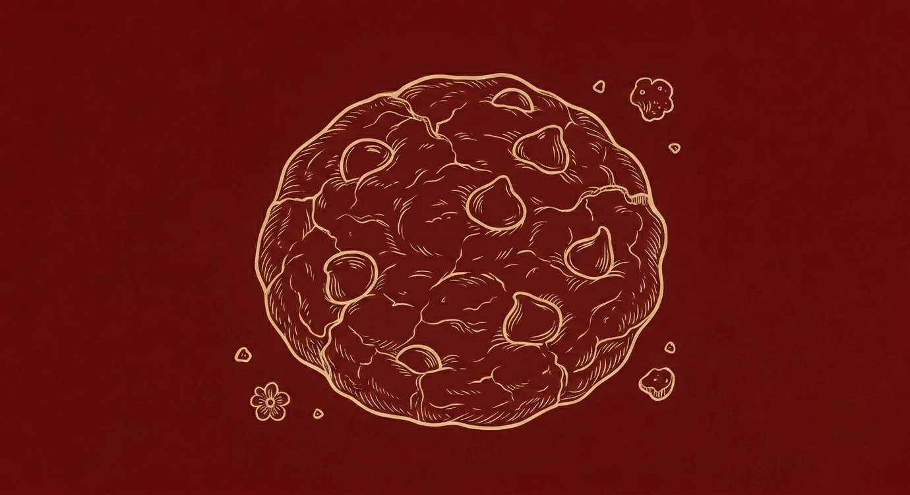
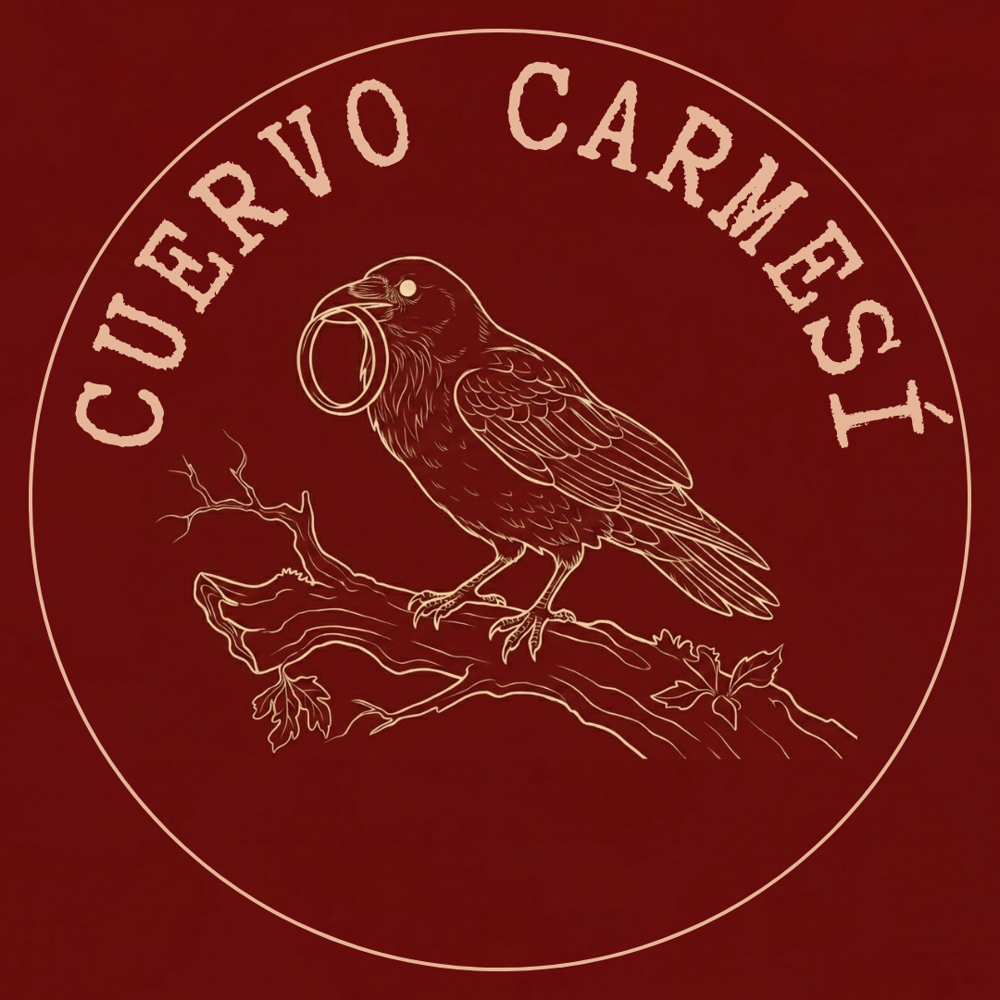

Cuenta la leyenda que los cuervos son recolectores incansables de tesoros perdidos...
Cuervo Carmesí es una marca independiente de aretes artesanales donde creamos accesorios hechos 100% a mano. El nombre nace porque, al igual que los cuervos, nos encanta coleccionar detalles llamativos y especiales.
